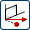
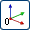

基准 CSYS 类型
基准 CSYS对话框中包含其它用于指定基准坐标系类型的选项。
可以在基准 CSYS对话框中使用下列类型。
-
 动态—使您可以手动移动 CSYS 到任何想要的位置或方位，或创建一个关联、相对于选定 CSYS 动态偏置的 CSYS。
动态—使您可以手动移动 CSYS 到任何想要的位置或方位，或创建一个关联、相对于选定 CSYS 动态偏置的 CSYS。 -
 自动判断—定义一个与选定几何体相关的 CSYS 或通过 X、Y 和 Z 分量的增量来定义 CSYS。实际所使用的方法是基于您选择的对象和选项。
自动判断—定义一个与选定几何体相关的 CSYS 或通过 X、Y 和 Z 分量的增量来定义 CSYS。实际所使用的方法是基于您选择的对象和选项。 -
原点、X 点、Y 点—根据您选择或定义的三个点来定义 CSYS。X 轴是原点到 X 点的矢量；Y 轴是原点到 X 点的矢量。
-
 X 轴，Y 轴，原点— 根据您选定或定义的一点和两个矢量来定义 CSYS。X 轴和 Y 轴都是矢量；原点为一点。
X 轴，Y 轴，原点— 根据您选定或定义的一点和两个矢量来定义 CSYS。X 轴和 Y 轴都是矢量；原点为一点。Z 轴，X 轴，原点以及 Z 轴，Y 轴，原点原点的使用方法是一样的。
-
 平面，X 轴，点—基于为 Z 轴选定的平面对象定义 CSYS，投影到 X 轴平面的矢量；以及投影到原点平面的点。
-
三个平面—根据三个选定的平面来定义 CSYS。首先选定的两个基准/平面的法矢可指定三条正交轴中的两条。最后选定的基准/平面用于确定原点并派生第三条轴。
-
 绝对 CSYS—指定模型空间坐标系作为坐标系。X 轴和 Y 轴是“绝对 CSYS”的 X 轴和 Y 轴；原点为“绝对 CSYS”的原点。
-
 当前视图的 CSYS—将当前视图的坐标系设置为坐标系。X 轴平行于视图底部；Y 轴平行于视图的侧面；原点为视图的原点(图形屏幕中间)。如果您通过名称来选择，CSYS 将不可见或在不可选择的图层中。
当前视图的 CSYS—将当前视图的坐标系设置为坐标系。X 轴平行于视图底部；Y 轴平行于视图的侧面；原点为视图的原点(图形屏幕中间)。如果您通过名称来选择，CSYS 将不可见或在不可选择的图层中。 -
偏置 CSYS—根据所选坐标系中所指定 X、Y 和 Z 的增量距离来定义 CSYS。X 轴和 Y 轴为现有 CSYS 的 X 轴和 Y 轴；原点为指定的点。